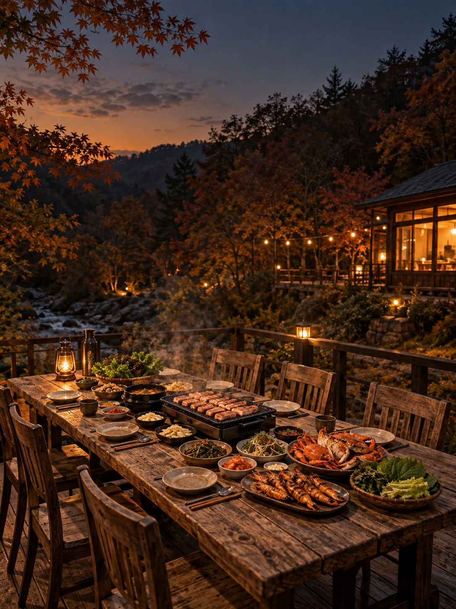
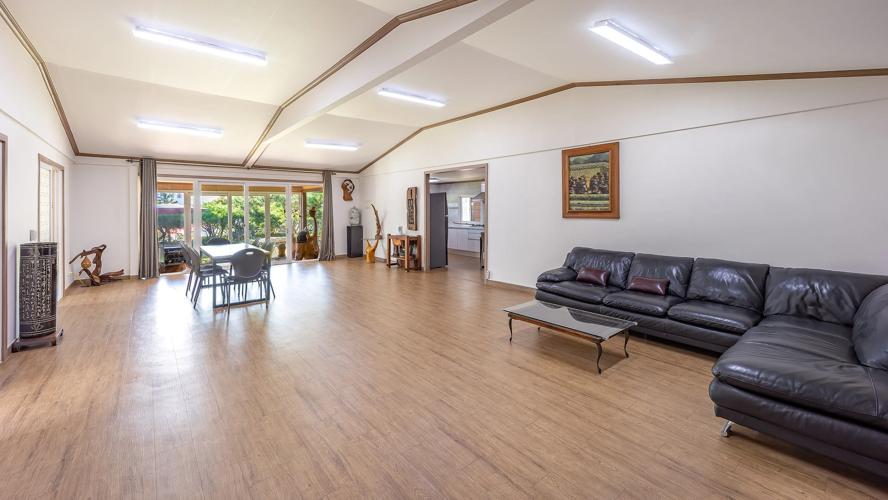
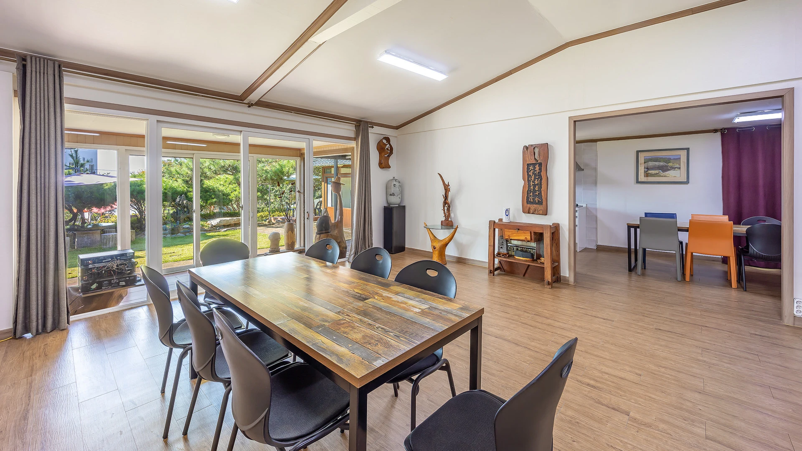
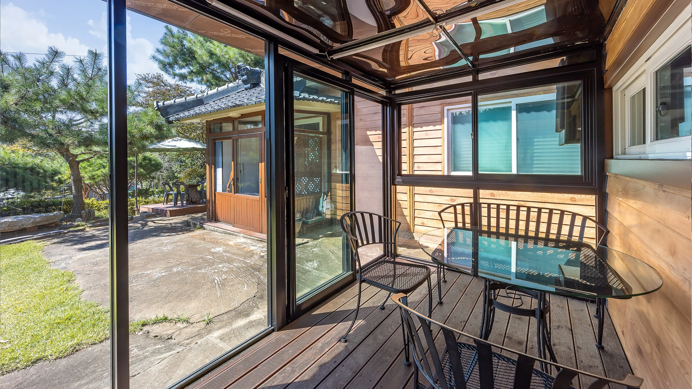

우리만의 독채
45평 · 침대룸 2개 · 거실 · 주방 · 화장실

YOU’RE INVITED · 가을 모임
한글날, 짧고 굵은 가을 휴가.
옷이나 소품에 갈색 하나씩 맞춰오기.
01 / INVITATION
바쁜 일상은 잠깐 접어두고.
이번 휴일은 우리끼리.
가을빛으로 맞춰 입고,
맛있는 음식 앞에 둘러앉아
웃고 떠들다 보면 어느새 깊어지는 밤.
이번 한글날은 대부도에서.
02 / OUR STAY
대부도 봄날 독채 펜션 · 봄날 객실



45평 · 침대룸 2개 · 거실 · 주방 · 화장실
객실별 단독 족구장 · 족구공 무료 대여 · 배드민턴 가능
우천 시에도 이용 가능 · 신청 19시까지 · 이용 22시까지
숯·그릴은 현장 신청 / 기본양념은 직접 준비
주차 · 와이파이 · 냉장고 · 전자레인지 · 취사도구 · 타월 · 샴푸 · 바디워시
화로·장작 제공 · 별도 유료 이용, 현장 문의
밤 10시부터는 조용한 실내 시간으로. 바깥 활동과 바베큐는 그 전에 마무리해요.
경기 안산시 단원구 서낭당길 9
체크인 15:00 · 체크아웃 11:00
아래 버튼으로 지도에서 위치를 확인해요.
펜션 안내: 내비게이션에 ‘대부북동 1104’ 입력 후 일심자동차 건물 뒤 첫 번째 집으로 이동하면 수월해요.
이용 안내: 펜션 공식 홈페이지
03 / OUR PLAN
짐 풀고, 방 정하고, 냉장고부터 채우기.
족구 · 배드민턴 / 다치지말고 즐겁게.
샤워와 휴식. 불 피우기와 재료 준비는 함께.
꽃게 · 새우 · 고기 바베큐로 한 상 가득.
몸으로 말해요, 훈민정음게임
뜨끈한 새우 꽃게라면.
일어나는 대로 간단한 아침과 커피.
설거지, 분리수거, 빠뜨린 물건 확인.
체크아웃 후 근처 카페는 당일 결정.
체크인 15:00 · 체크아웃 11:00 / 밤 22시 이후에는 조용히 즐겨요.
04 / SHOPPING CREW
고기와 곁들임, 마실 것 준비.
꽃게와 새우, 신선하게 준비.
구매 체크는 이 화면에서 확인용으로 사용해요. 다른 사람의 화면과 공유되지는 않아요.
05 / BEFORE YOU GO
06 / TRIP WEATHER
대부북동 일대 · 10월 9일–10일
예보를 불러오는 중이에요.
날씨 출처: Open-Meteo · 예보는 달라질 수 있어요.